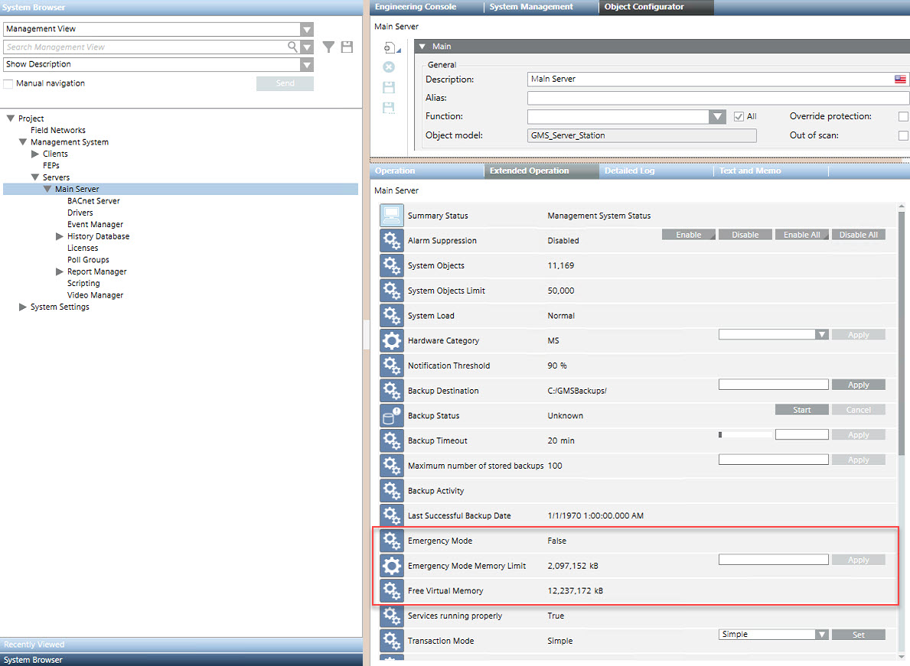

Emergency Mode
The system automatically monitors the available virtual memory as well as the hard disk space on the Desigo CC server computer. If values fall short of the predefined thresholds, the system assumes that there is a general computer problem (insufficient resources, viruses, memory leaks, corrupt programs) and switches to a secure Emergency Mode to protect the database integrity.
In such a situation, an immediate action is required. A fault event displays in Event List to recommend repairing the memory shortage and restarting the project.
Emergency Mode Status
In Engineering mode, you can check the emergency mode status from the Management View of System Browser. As illustrated below, the Main Server properties in the Extended Operation tab show:
- Emergency Mode status
- Emergency Mode Memory Limits (virtual memory minimal threshold)
NOTE: This value may only be changed after consulting technical support. - Free Virtual Memory (including physical and cached memory, see the Windows Task Manager)
Emergency Mode is triggered in the following situations:
- The Free Virtual Memory falls below the value configured in Emergency Mode Memory Limits.
- The available hard disk space falls below 100MB.
NOTE: This 100MB limit for Emergency mode is fixed, however you can set up a higher disk capacity warnings through hard disk drive monitoring,

Troubleshooting WinCC OA Emergency Mode
WinCC OA automatically monitors free virtual memory and hard drive space of the server station. In case of shortage of disk space or virtual memory, it automatically switches to Emergency mode to protect the database integrity.
This secure mode is indicated in the WinCC OA Log Viewer, while an alarm occurs in the Desigo CC station.
- To solve this issue, free up virtual memory or hard drive space, and restart the project.
However, to prevent WinCC OA Emergency mode, it is recommended to configure Desigo CC to monitor the hard disk space. For instructions, see (Optional) Monitor Server Disk Capacity.